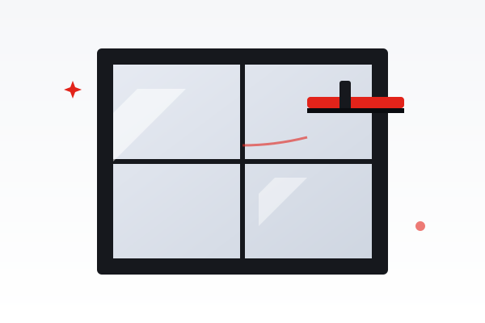

Myjemy okna, witryny sklepowe i duże przeszklenia bez smug i zacieków, w domach, biurach, sklepach i lokalach gastronomicznych. Dysponujemy sprzętem teleskopowym.

Czyste okna to więcej światła w mieszkaniu i lepsze pierwsze wrażenie klienta przekraczającego próg sklepu. Myjemy je tak, by nie zostawały smugi, także tam, gdzie trudno sięgnąć.
Stosujemy profesjonalny sprzęt i środki, które nie pozostawiają smug ani zacieków. Myjemy okna, ramy, parapety, witryny sklepowe oraz duże przeszklenia, również trudno dostępne i na wysokości.
Cena rośnie przy zabrudzeniach poremontowych (farba, zaprawa, folie, nacieki wapienne) oraz przy oknach dzielonych, z kratami, roletami czy żaluzjami.
Ustalamy zakres telefonicznie, na podstawie zdjęć i wymiarów.
Czyścimy szyby, ramy i parapety profesjonalnym sprzętem.
Sprawdzamy efekt pod światło i poprawiamy ewentualne smugi.
Minimalne zamówienie w Krakowie: od 150 zł. Dojazd na terenie Krakowa: 0 zł. Konkretna wycena na podstawie zdjęć i wymiarów.
| Usługa | Cena |
|---|---|
| Do 6 m wysokości: jednostronnie | od 4 zł / m² |
| Do 6 m wysokości: obustronnie | od 7 zł / m² |
| Powyżej 6 m wysokości | wycena |
| Usługa | Cena |
|---|---|
| Szklana balustrada / okno 1-skrzydłowe | od 15 zł |
| Okno 2-skrzydłowe | od 30 zł |
| Okno 3-skrzydłowe | od 45 zł |
| Okno dachowe | od 25 zł |
| Drzwi balkonowe 1 / 2-skrzydłowe | od 30 / 50 zł |
| Mycie luster, szyldów, usuwanie naklejek | wycena |
Ceny mają charakter orientacyjny. Pełną ofertę zobaczysz w cenniku wszystkich usług.
Tak, dysponujemy sprzętem teleskopowym do witryn i przeszkleń trudno dostępnych.
Usuwamy farbę, zaprawę, folie i nacieki. Takie zlecenia wyceniamy indywidualnie.
Prześlij zdjęcia i wymiary MMS lub mailem, a podamy konkretną cenę.
Umów mycie okien lub witryn. Dojazd w Krakowie gratis.